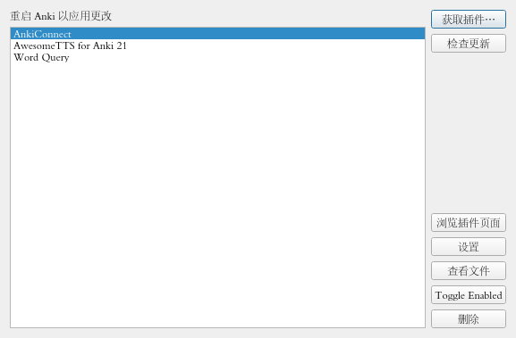
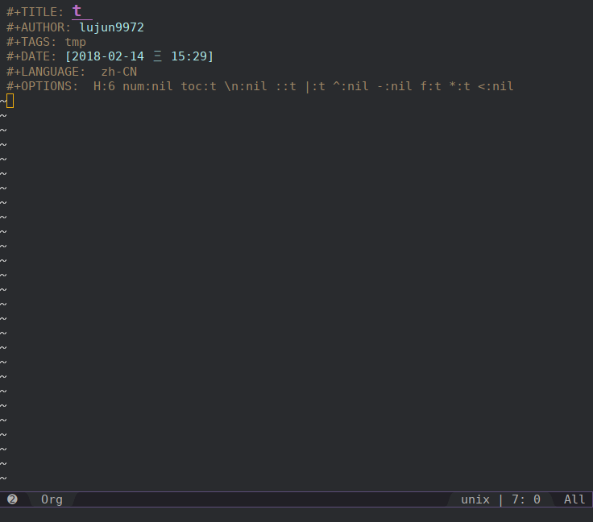
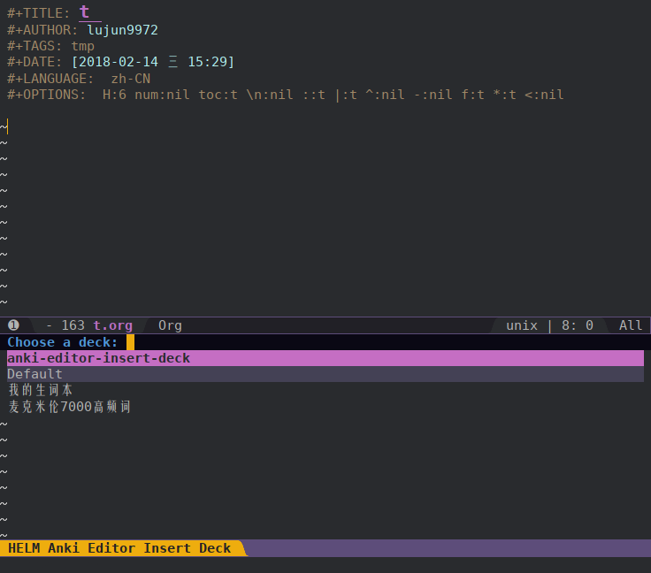
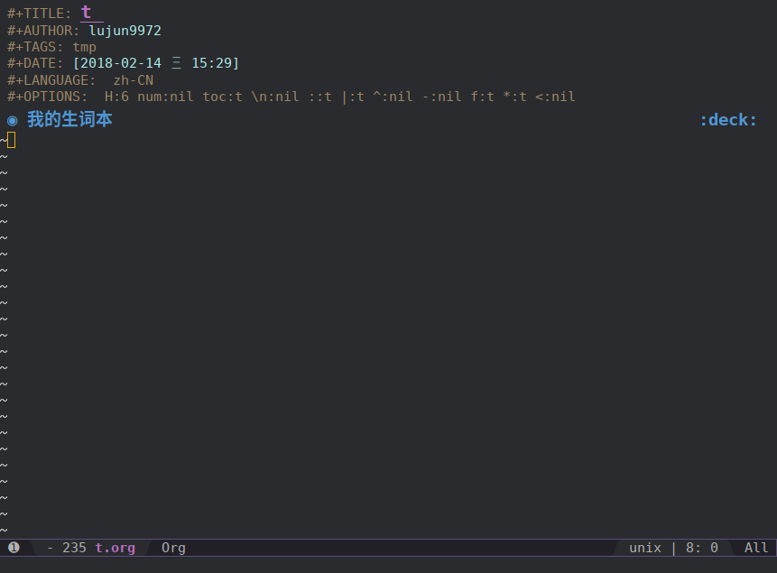
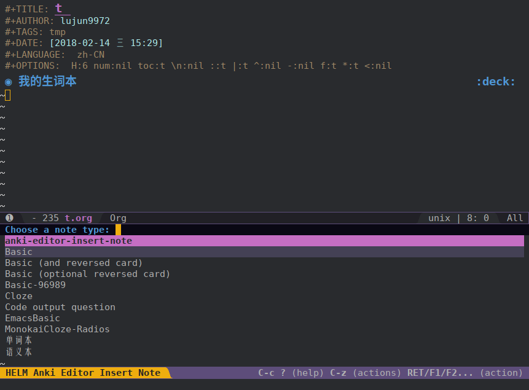
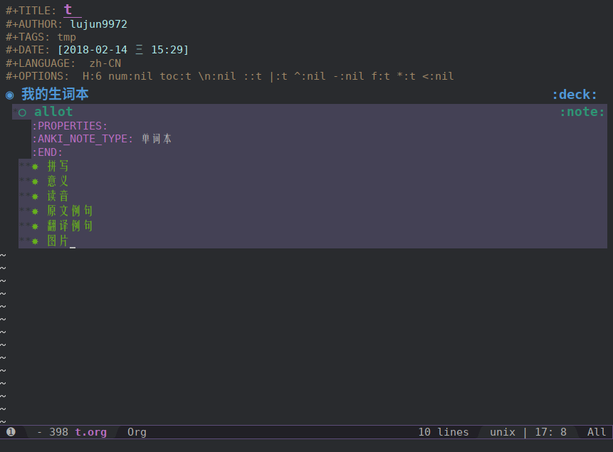
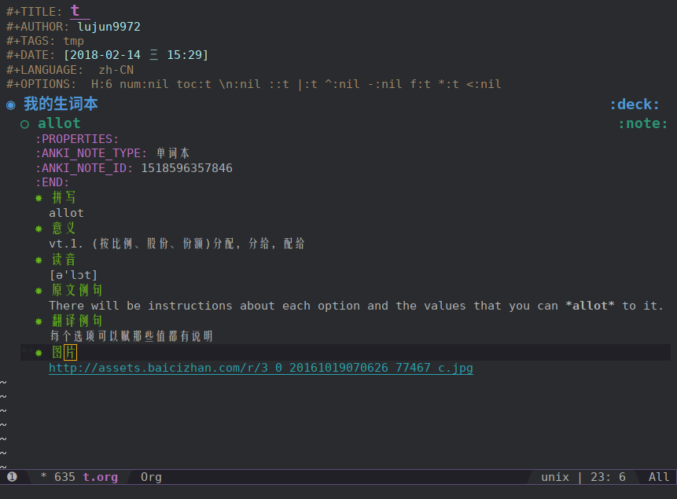
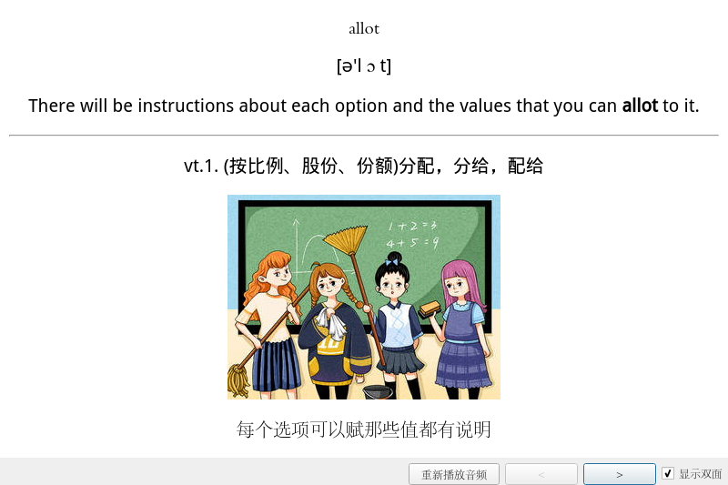

anki-editor:让你通过Org-mode来创建Anki cards
目录
我是一个Anki使用者，时常要用创建一些Anki card。然而Anki的编辑功能实在太弱了，有的时候还得手写html代码，真是很不人性化啊。
直到有一天，我看到 anki-editor,它可以让你 Make Anki Cards in Org-mode.
也就是说，它可以让你通过org来编写复杂的内容（比如表格，公式等）,然后导入到Anki中生成Anki card。
它的原理是利用org-mode的html export backend将org转换成html,然后通过Anki的anki-connect插件生成新的Anki Card。
准备工作
根据说明，该插件需要 curl 和 anki-connect 的支持
安装curl
sudo pacman -S --noconfirm curl
在anki上安装anki-connect
在anki中点击"工具"->"附加组件"->"获取插件..."->输入anki-connect的下载代码：2055492159，就可以了 
在Emacs上安装anki-editor插件
anki-editor已经纳入MELPA中，可以通过
use-package自动安装(use-package anki-editor :ensure t)如果使用的是spacemacs，那么可以直接在
dotspacemacs-additional-packages中加上anki-editor就行了dotspacemacs-additional-packages '(request json-mode all-the-icons-dired edit-indirect anki-editor)
使用
在使用anki-editorn之前, 你需要先打开anki,因为它需要与anki中的anki-connect通讯，获取deck和note的信息。
新建一个org文件

运行 M-x anki-editor-insert-deck 插入一个deck

可以看到anki-editor会列出当前anki上已有的那些deck，你只需要选择一个deck就会插入一个以deck为名的heading
比如我这里选择 我的声词本, 那么就会插入一个名为 我的生词本 的heading

注意到，新生成的heading后面带了个 :deck: 的tag
对于anki-editor来说，被标记为 deck 的heading就被认为是一个deck
运行 M-x anki-editor-insert-note 插入一个note

同样的，anki-editor会列出当前anki上已有的note类型，这里我选择单词本,然后再输入note heading的名称，这个名称可以随意起

anki-editor会根据note类型中定义的域，自动插结构，每个域都是一个子heading
现在开始往里面填内容

需要说明的是: 一个note heading不一定是deck heading的直接子节点，但必须属于某一个deck heading的后代
运行 M-x anki-editor-submit 提交
就能看到Anki上新生成的card了 
最后来一张官网上的动图，大家来感受下